Tutorial 1 — Como fazer uma chamada de vídeo pelo WhatsApp
Objetivo: Ensinar a pessoa a ligar para familiares ou amigos por vídeo.
- 1. Abra o aplicativo WhatsApp no celular.
- 2. Procure na lista de conversas a pessoa para quem deseja ligar.
- 3. Toque no nome da pessoa para abrir a conversa.
- 4. Na parte de cima da tela, procure o símbolo de uma câmera.
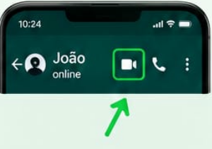
- 5. Toque na câmera para iniciar a chamada de vídeo.
- 6. Espere a pessoa atender.
- 7. Para encerrar a chamada, toque no botão vermelho de desligar.
Dica: Se você não quiser aparecer na câmera, pode fazer uma chamada de voz tocando no símbolo de
telefone.
Tutorial 2 — Como fazer um pagamento usando Pix
Objetivo: Ensinar como realizar um pagamento utilizando o Pix pelo aplicativo do banco.
- 1- Abra o aplicativo do seu banco.
- 2- Entre na sua conta usando sua senha ou biometria.
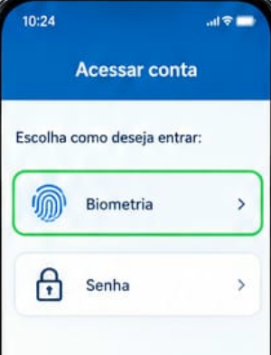
- 3- Procure pela opção "Pix".
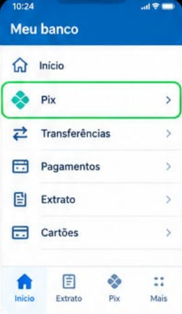
- 4- Escolha "Pagar" ou "Transferir".
- 5- Digite a chave Pix da pessoa ou empresa que receberá o dinheiro.
- 6- Confira com atenção o nome do destinatário e o valor.
- 6- Se todas as informações estiverem corretas, confirme o pagamento.
- 7- Digite sua senha ou utilize a biometria para finalizar.
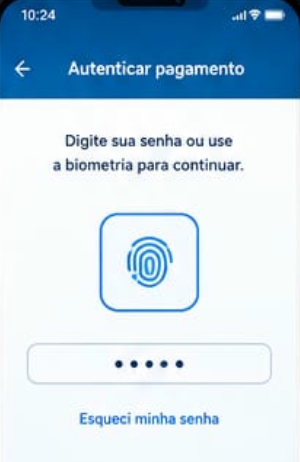
Cuidado: Nunca informe sua senha bancária, código de confirmação ou código recebido por SMS para
outra pessoa.
Dica: Antes de confirmar qualquer Pix, sempre confira quem vai receber e quanto será pago.
Tutorial 3 — Como pesquisar algo no Google pelo celular
Objetivo: Ensinar a pesquisar informações importantes, como endereço, telefone, notícias, receitas
ou horários.
- 1- Abra o aplicativo Google ou o navegador do celular.
- 2- Toque na barra de pesquisa.
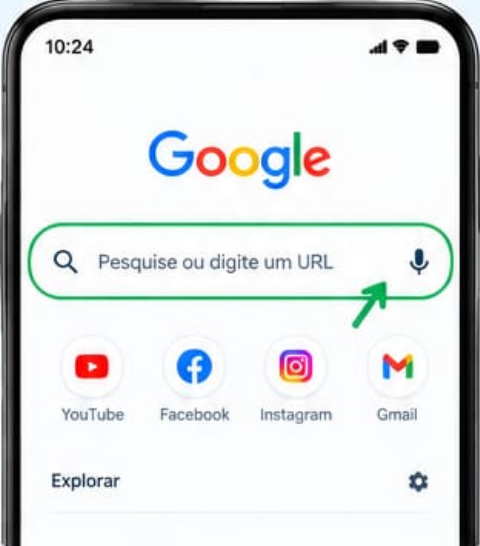
- 3- Digite o que deseja descobrir.
Exemplo:"Qual é o horário do supermercado?"
- 4- Toque no botão Pesquisar.
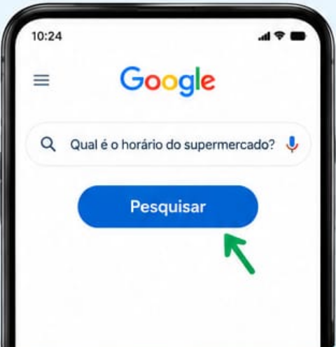
- 5- Leia os resultados que aparecem na tela.
- 6- Toque em um resultado para abrir a página.
Dica: Se tiver dificuldade para digitar, toque no símbolo do microfone e fale o que deseja
pesquisar.
Tutorial 4: Como criar uma senha segura
Objetivo: Proteger contas e informações pessoais.
- 1. Escolha uma senha que seja difícil para outras pessoas descobrirem.
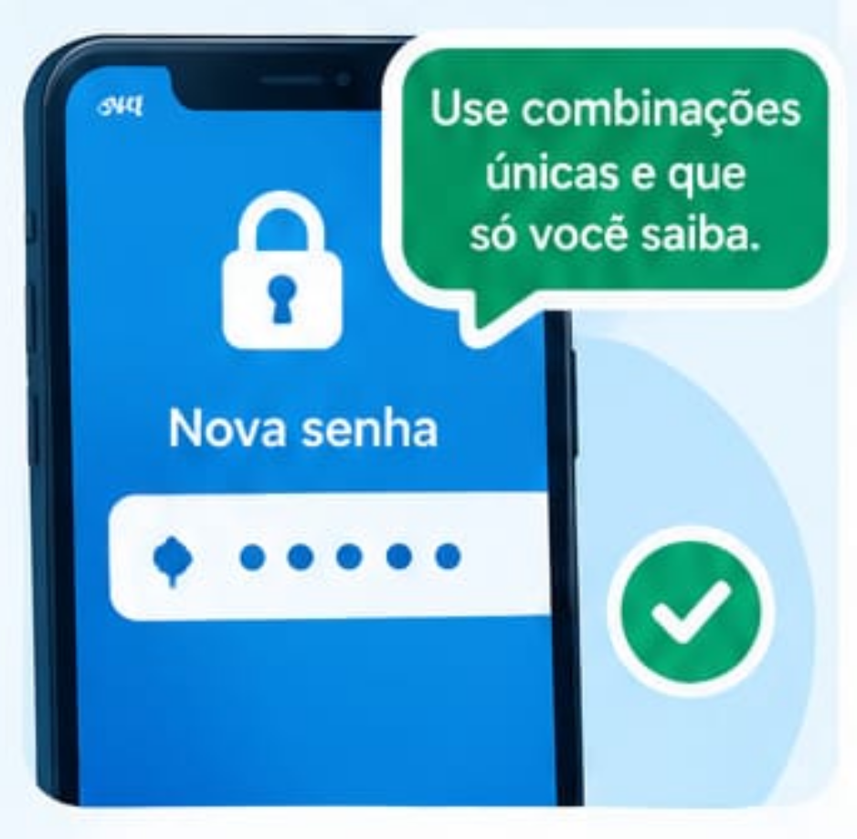
- 2. Use letras, números e, quando possível, símbolos.
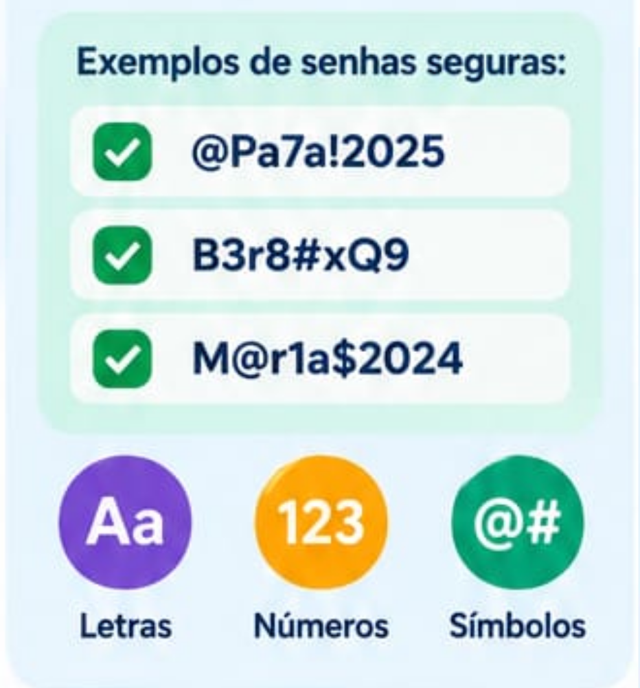
- 3. Evite usar apenas 123456, sua data de nascimento ou seu nome.
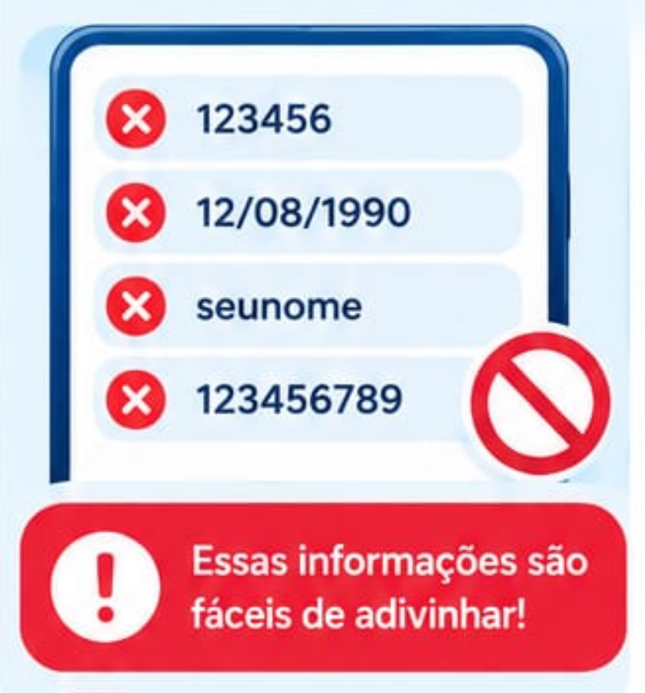
- 4. Não compartilhe sua senha com desconhecidos.
- 5. Evite anotar a senha em locais públicos.
Tutorial 5: Como pedir uma viagem pelo aplicativo
Objetivo: Aprender a utilizar aplicativos de transporte.
- 1- Abra o aplicativo de transporte.
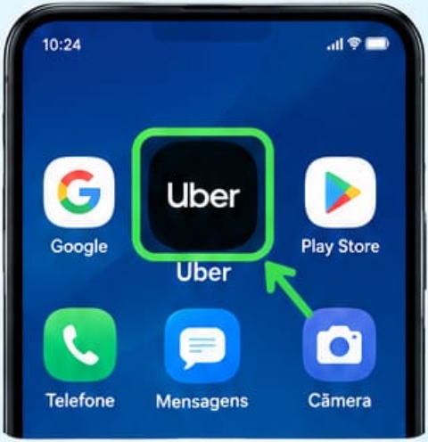
- 2- Informe o local onde deseja ir.
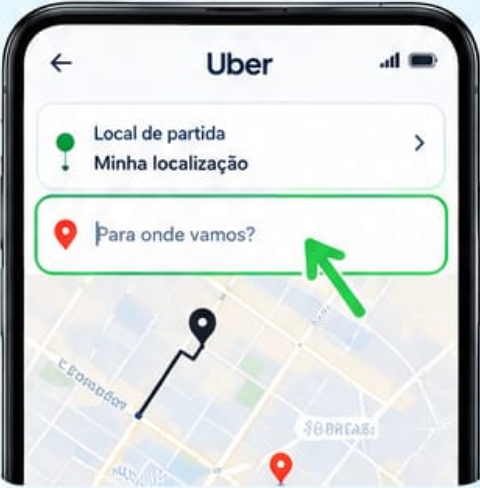
- 3- Confira o endereço de destino.
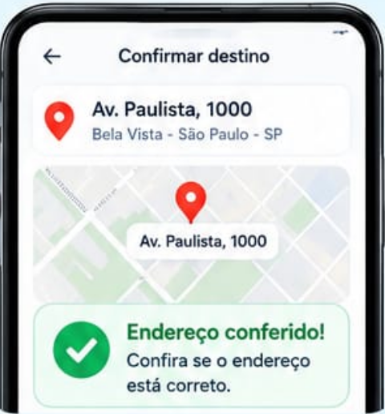
- 4- Confira o preço estimado da viagem.
- 5- Escolha a forma de pagamento.
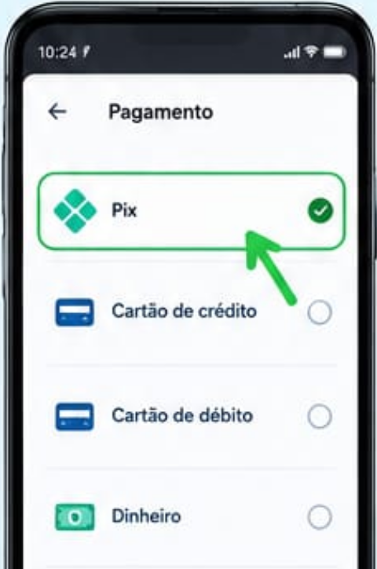
- 6- Confirme a solicitação.
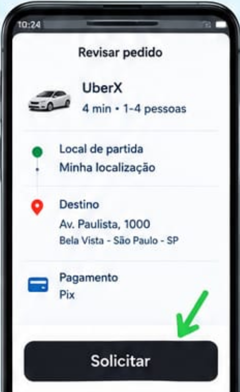
- 7- Confira nome, foto e placa do motorista antes de entrar.
Importante: Nunca entre em um carro sem conferir se as informações do motorista e do
veículo correspondem às mostradas no aplicativo.
Se tiver qualquer dúvida, entre em contato com o suporte do Aplicativo.
Tutorial 6: Como identificar uma mensagem suspeita
Objetivo: Evitar golpes pela internet.
- 1- Leia a mensagem com calma.
- 2- Veja quem enviou.
- 3- Desconfie de mensagens que dizem "URGENTE!" ou ameaçam bloquear sua conta.
- 4- Não clique imediatamente em links desconhecidos.
- 5- Não informe senhas ou códigos recebidos por SMS.
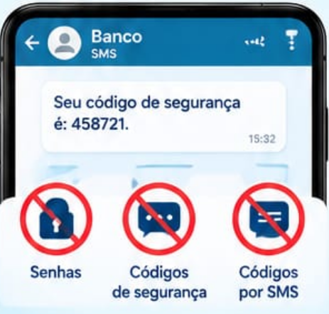
- 6- Se estiver em dúvida, confirme a informação diretamente com a empresa ou pessoa.
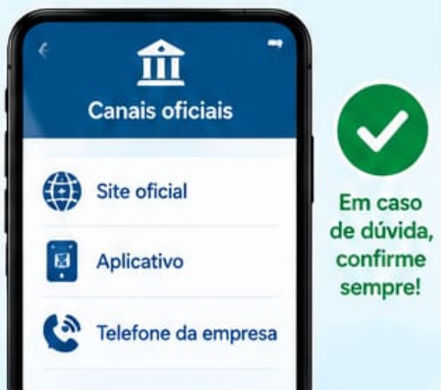
Dica de ouro: Se alguém pedir seu código de WhatsApp, senha bancária ou código de
segurança, não envie.
Tutorial 7: Envio de arquivos pelo WhatsApp
Objetivo: Enviar fotos, arquivos e mídia pelo WhatsApp
- 1. Abra o aplicativo “WhatsApp”
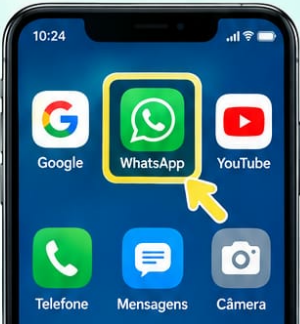
- 2. Abra a conversa da pessoa
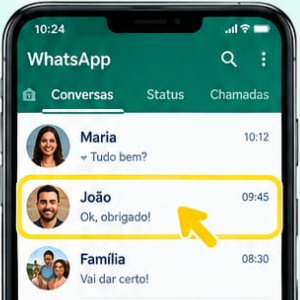
- 3. Toque no ícone de anexar(pode ser um simbolo de um clip ou sinal de +)
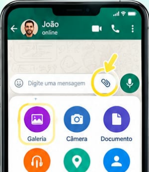
- 4. Escolha a imagem na GALERIA
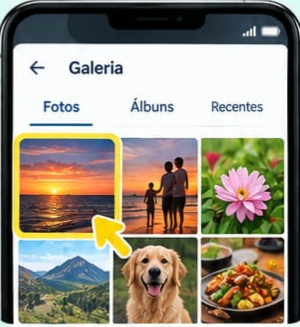
- 5. Toque em enviar
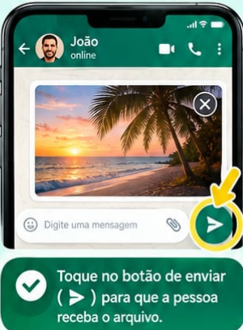
Tutorial 8: Como encontrar uma localização no google maps
Objetivo: Se localizar e buscar as informações de ruas e bairros
- 1- Abra o Google Maps
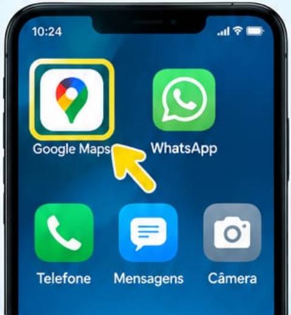
- 2- Toque na barra de pesquisa
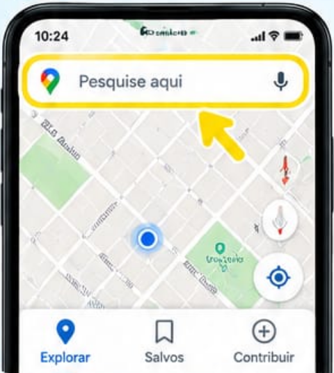
- 3- Digite o endereço ou nome do lugar
- 4- O local aparecerá para você
- 5- Toque em ROTAS para descobrir onde chegar
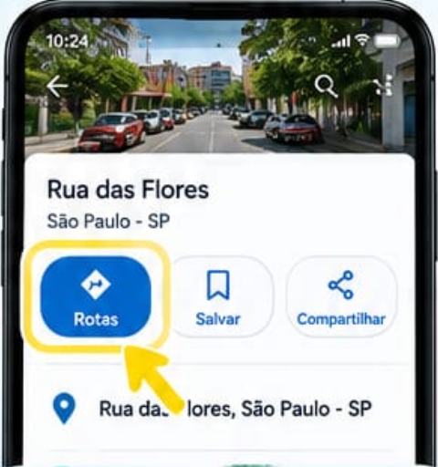
Tutorial 9: Como adicionar um contato pelo celular
Objetivo: Salvar contato no seu dispositivo
- 1- Abra o aplicativo Contatos
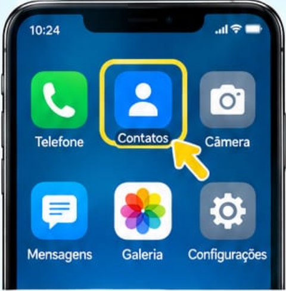
- 2- Clique no +
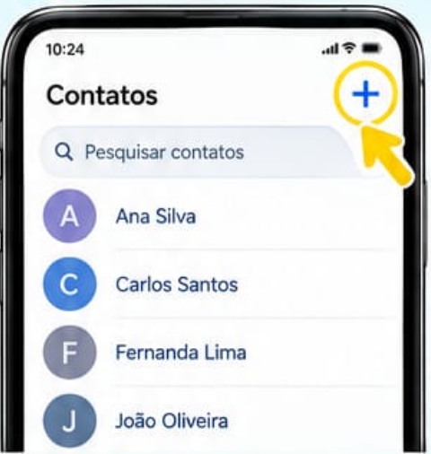
- 3- Digite o nome da pessoa
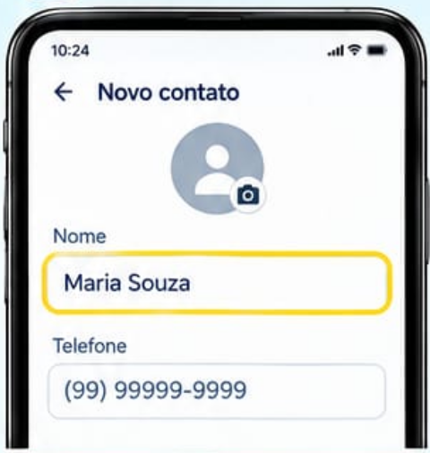
- 4- Digite o número do telefone
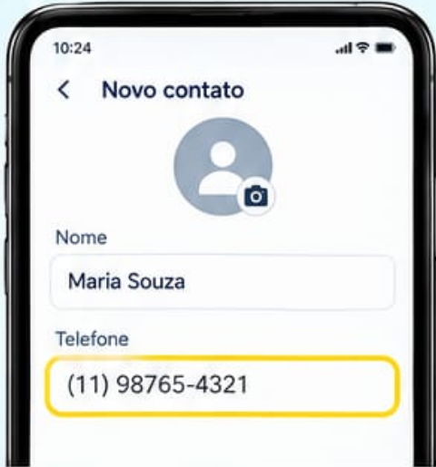
- 5- Toque em “salvar”
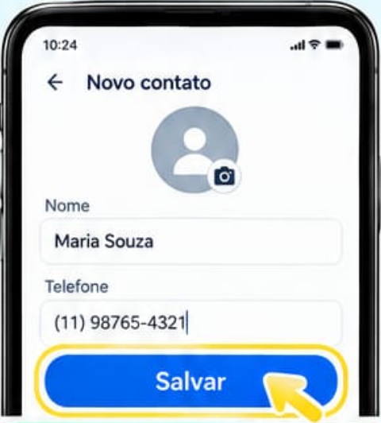
- 6- O contato será adicionado ao seu celular
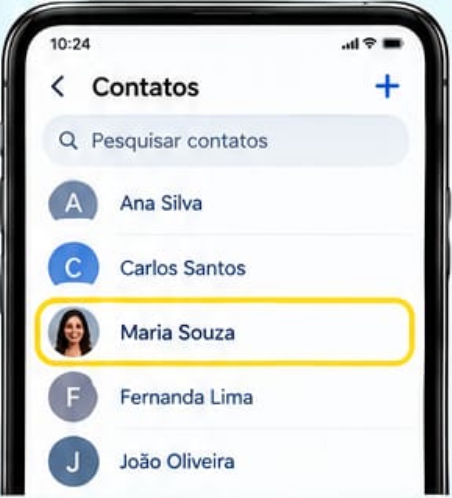
Dica: Mantenha seus contatos sempre atualizados. Assim, você encontra as pessoas com mais facilidade.
Lembre-se: Não compartilhe seus contatos com desconhecidos.
Tutorial 10: Como enviar um e-mail
Objetivo: Criar digitalmente um e-mail
- 1- Abra o seu aplicativo de e-mail
- 2- Toque em “escrever”, novo email
- 3- Escreva o assunto
- 4- Digite sua mensagem
- 5- Se precisar, adicione foto ou documento
- 6- Confira tudo
- 7- Toque em enviar
Tutorial 11: Como aumentar o volume do seu celular
Objetivo: Utilizar o botão para controlar o volume do celular
- 1- Localize o botão de aumentar o volume na lateral do dispositivo
- 2- Aperte no botão superior “+”
- 3- Continue apertando até chegar ao volume desejado
- 4- Faça um teste reproduzindo um audio ou video
Tutorial 12: Como assistir um vídeo no YouTube
Objetivo: Assistir vídeos de forma dinâmica na internet
- 1- Abra o aplicativo YouTube
- 2- Clique na LUPA
- 3- Digite o que você deseja assistir
- 4- Clique no seu video favorito
- 5- Controle o áudio de sua preferência
Tutorial 13: Como apagar uma mensagem no WhatsApp
Objetivo: Apagar mensagens enviadas ou recebidas no WhatsApp
- 1- Abra a conversa
- 2- Encontre a mensagem
- 3- Pressione a mensagem com o seu dedo
- 4- Toque no ícone da lixeira
- 5- Escolha a opção “Apagar para Todos”
- 6- Confirme
Tutorial 14: Como instalar um aplicativo
Objetivo: Instalar novos aplicativos no dispositivo
- 1- Abra a loja de aplicativos (Google Play Store ou App Store)
- 2- Toque na barra de pesquisa
- 3- Digite o nome do aplicativo
- 4- Confirme se é aplicativo correto
- 5- Toque em INSTALAR ou OBTER
- 6- Aguarde o download
- 7- O aplicativo foi atualizado com sucesso
Tutorial 15: Como atualizar um aplicativo
Objetivo: Atualizar aplicativos instalados no dispositivo
- 1- Abra a loja de aplicativos (Google Play Store ou App Store)
- 2- Navegue até a seção "Atualizações"
- 3- Selecione o aplicativo que deseja atualizar
- 4- Clique em "Atualizar"
Tutorial 16: Como carregar o seu celular
Objetivo: Carregar o celular
- 1- Pegue o carregador
- 2- Conecte o carregador à tomada
- 3- Conecte o carregador no seu celular
- 4- Verifique o se o icone de carregamento apareceu
- 5- Quando se estiver carregando, NÃO retire da tomada
Tutorial 17: Como fazer uma ligação
Objetivo: Fazer uma ligação
- 1- Abra o aplicativo do Telefone
- 2- Toque em contatos
- 3- Procure o nome das pessoas
- 4- Toque no nome da dele
- 5- Toque no símbolo de telefone
- 6- Espere a pessoa atender a sua chamada
- 7- Para desligar, aperte o botão vermelho